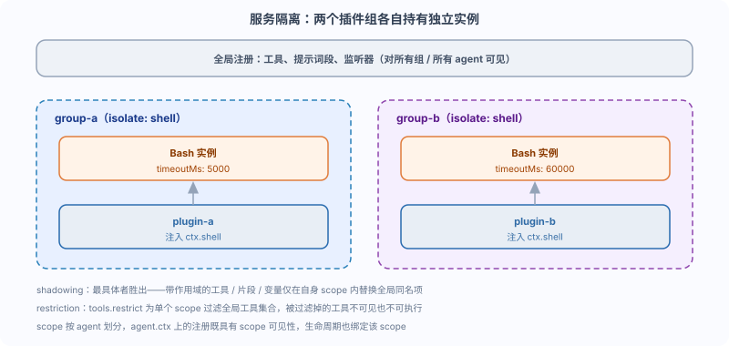

DeepSeek Harness Service Isolation and Scopes
In this section, we will introduce how different plugin groups can see different instances of the same service.
Behind this is Cordis'sService isolationandagent scope (scope)Mechanism.
Service isolation: isolate
cordis.yml supports service isolation: the same service can have multiple instances, and different plugin groups see different instances.
The keyword isisolateConfiguration, used with the group plugin to divide plugins into groups.
Example
# Define two plugin groups group-a and group-b, each isolating a shell service
- id: group-a
name: '@deepseek-ai/cordis-plugin-group'
group: true
isolate:
shell: true # Let the shell services in this group be instantiated independently
config:
- name: '@deepseek-ai/dsh-bash-local'
config:
timeoutMs: 5000 # group-a's Bash timeout 5 seconds
- name: './src/plugin-a.ts'
- id: group-b
name: '@deepseek-ai/cordis-plugin-group'
group: true
isolate:
shell: true
config:
- name: '@deepseek-ai/dsh-bash-local'
config:
timeoutMs: 60000 # group-b's Bash timeout: 60 seconds
- name: './src/plugin-b.ts'
plugin-a and plugin-b each see the Bash instance within their own group, without affecting each other.
Group-a's Bash commands time out after 5 seconds, group-b's after 60 seconds; the two sides are unaware of each other's existence.

Why isolation is needed
Different tasks may have completely different requirements for the same capability.
For example, fast-interaction tasks want Bash to time out quickly, while long tasks want enough time to be given.
Isolation lets the same service be configured and take effect per group, rather than a global one-size-fits-all approach.
Scope: scope
Scope is a registration unit divided by agent.
A contribution (tool, prompt segment, variable, restriction, listener) is either global or belongs to exactly one scope key.
| Concepts | Meaning |
|---|---|
| scope | Registration units divided by agent; only two layers, adopting a flat structure. |
| scope key | Opaque identifier of a scope; an active agent is the key of its own scope. |
| agent.ctx | The agent's scoped context; registration has scope visibility, and its lifecycle is also bound to that scope. |
| shadowing | Most-specific-wins name resolution: scoped tools/segments/variables replace global items with the same name only within their own scope. |
| restriction | tools.restrict filters the global tool set for a single scope; multiple restrictions are combined by intersection. |
| lineage | Parent-child relationship facts carried as data (parentSession, delegationDepth, etc.) never affect visibility. |
Scoped registrations are not inherited downward to subagents.
Subtree behavior is expressed through lineage data, not through scope structure.
Shadowing: the most specific wins.
Shadowing is a mechanism for customizing persona and tool variants per agent.
A scoped tool replaces the global tool with the same name only within that scope; other agents still see the global version.
Restriction: filtering global tools
Restriction uses tools.restrict to filter the global tool set for a single scope.
Filtered-out global tools neither enter the prompt nor are allowed to execute, making them indistinguishable from non-existent tools.
In other words, restriction makes agents in a scope completely "unable to see" certain global tools, rather than rejecting them at call time.
Summary self-test
isolate instantiates the same service by group, scope divides registration by agent, while shadowing and restriction respectively implement same-name replacement and global filtering.
Test yourself:
- With isolate: { shell: true }, what is the relationship between the Bash instances of group-a and group-b?
- Will scoped registrations be inherited by subagents?
- What problems do shadowing and restriction each solve?